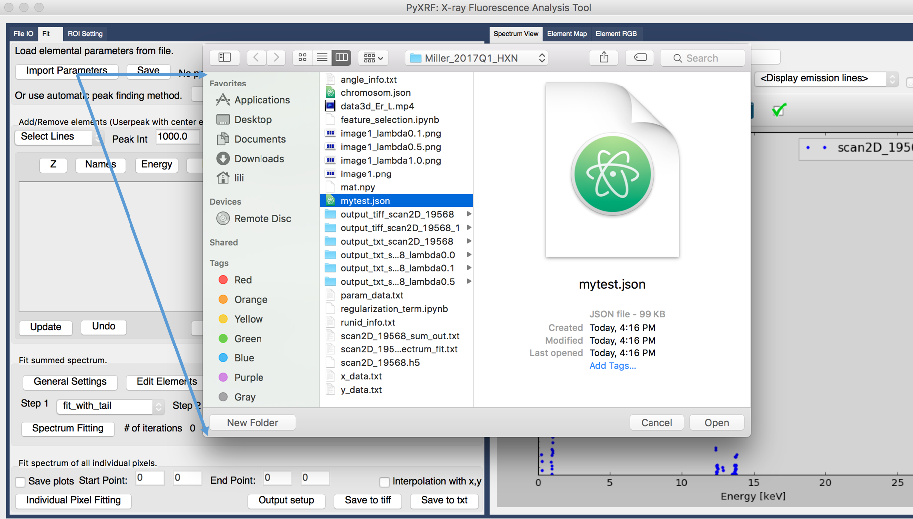
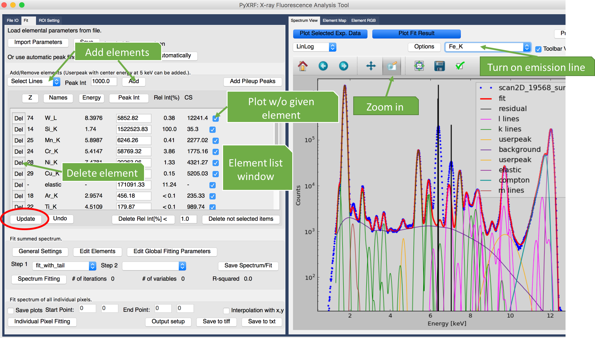

Spectrum fitting¶
Once you select which data to fit (either summed spectrum or from given detector), it is ready to move on to fitting step. Please click the Fit panel on the upper left corner, which is next to File IO (Figure 1).
Automatic peak finding (create parameter json file)¶
If you don’t have a parameter json file, you can start from scratch with automatic peak finding.
Click button
Find Elements Automatically, you will see a small window calledAutomatic Element Findingpop up.Adjust parameter in this window, such as calibration parameters a0, a1, incident E, etc.
Then click button
Find Elementsin the same window.You will see that many elements are found automatically. You can remove small intensity elements, or add/remove elements based on your own opinion.
Click button
Saveto save this parameter configuration for later use.
Load parameter file¶
If you already have a parameter json file, you need to load it into pyxrf by clicking “Import Parameters” (Figure 1). Otherwise, please refer to the previous step. The json file saves all the parameters for data fitting.
Figure 1. Load json file
Plot emission lines¶
Let’s first focus on the plotting (“Spectrum View” panel on the right). We can easily zoom in spectrum, and turn on elemental emission lines to see which element is missing (see Figure 2). You can use up and down arrows in your keyboard to browse the elements one by one.
After loading parameter file, we can immediately see all the elements are listed in the “element list window” on the left. Each element includes varies of information including Z number, elemental name, emission energy [kev], peak intensity, relative intensity(normalized to max), and cross section [barns/atom] (Figure 2).
Figure 2. Zoom in plot
Add/Remove elements¶
Here we can clearly see that Fe element is missing. Following the instruction on how to add elements in Figure 2, we need to first select which elemental line to add, and confirm that by click “Add” button. Then you will see the element is shown in the element list window.
You can also easily delete any element by clicking the Del button shown in Figure 2.
You may also change the value of peak intensity to see plotting change in real time.
Once you are happy with all the changes, please click “Update” button to save all the changes.
Summed spectrum fitting¶
Once you are happy with all the parameter setting, you can start to fit the summed spectrum by simply click button “Spectrum Fitting” at the lower part of Fit panel.
The fitting process may take longer time if more elements are included. For instance, more than 30 seconds are used if you want to fit more than 10 elements.
You can also output summed spectrum fitting result by click button “Save Spectrum/Fit”. The output data has 3 columns including energy, experiment and fitted results for summed spectrum.
Individual Pixel fitting¶
After summed spectrum fitting is done, you can move forward with individual pixel fitting. Please click button “Individual Pixel Fitting” at the very bottom of Fit panel. The individual pixel fitting will find all the elements defined from summed spectrum fitting.
The fitting process is usually fast because multiprocessing is applied. After fitting is done, the output will be 2D map for different elements.